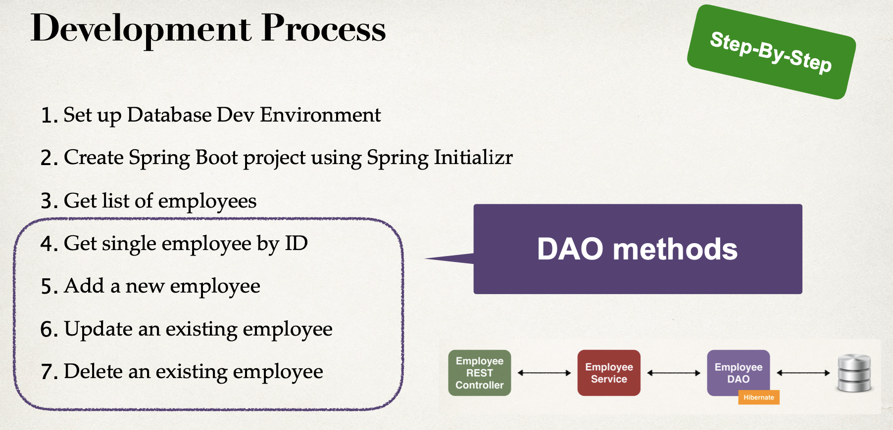
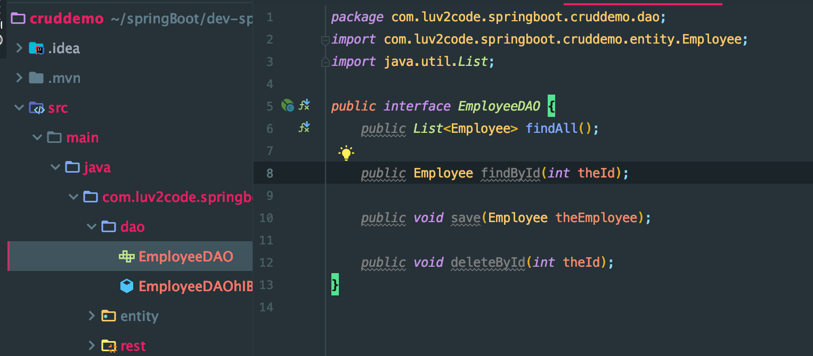
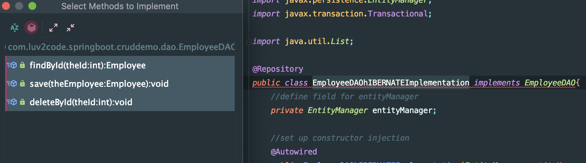
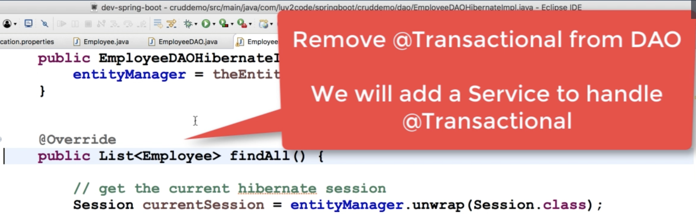

7. Additional CRUD for DAO

- add new methods into interface

- implement methods


package com.luv2code.springboot.cruddemo.dao;
import com.luv2code.springboot.cruddemo.entity.Employee;
import org.hibernate.Session;
import org.hibernate.query.Query;
import org.springframework.beans.factory.annotation.Autowired;
import org.springframework.stereotype.Repository;
import javax.persistence.EntityManager;
import java.util.List;
@Repository
public class EmployeeDAOhIBERNATEImplementation implements EmployeeDAO{
//define field for entityManager
private EntityManager entityManager;
//set up constructor injection
@Autowired
public EmployeeDAOhIBERNATEImplementation(EntityManager entityManager){
this.entityManager = entityManager;
}
@Override
public List<Employee> findAll() {
//get the current hibernate session
Session currentSession = entityManager.unwrap(Session.class);
//create a query
Query<Employee> theQuery =
currentSession.createQuery("from Employee", Employee.class);
//execute query and get result list
List<Employee> employees = theQuery.getResultList();
//return the results
return employees;
}
@Override
public Employee findById(int theId) {
//get the current hibernate session
Session currentSession = entityManager.unwrap(Session.class);
//get the employee
Employee theEmployee =
currentSession.get(Employee.class, theId);
//return the employee
return theEmployee;
}
@Override
public void save(Employee theEmployee) {
//get the current hibernate session
Session currentSession = entityManager.unwrap(Session.class);
//save employee
currentSession.saveOrUpdate(theEmployee);
}
@Override
public void deleteById(int theId) {
//get the current hibernate session
Session currentSession = entityManager.unwrap(Session.class);
//delete object with primary key
Query theQuery = currentSession.createQuery(
"delete from Employee where id=:employeeId");
theQuery.setParameter("employeeId", theId);
theQuery.executeUpdate();
}
}